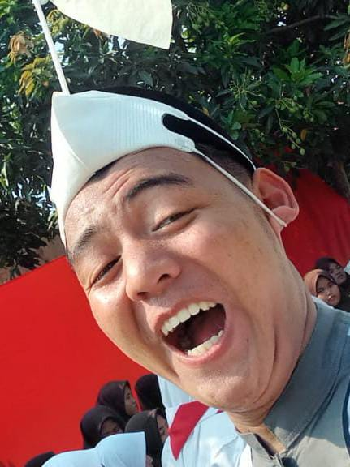

| Nama | : M. Yusuf Badru Tamam |  |
| Tempat, tanggal lahir | : Sukabumi, 24 Oktober 2002 | |
| Jenis Kelamin | : Laki-laki | |
| Agama | : Islam | |
| Alamat | : Pisangan Desa Karangpatri Kec. Pebayuran Kab. Bekasi Jawa Barat | |
| : yuusufmuhammad7@gmail |
| TINGKATAN PENDIDIKAN | LULUS |
| MI Nurul Falah | 2015 |
| MTS YASTI 1 CISAAT | 2018 |
| SMK AL-JAZARI | 2021 |
| JENIS PENDIDIKAN | TAHUN |
|
2017 |
|
2018 |
|
2019 |
|
2020 |
|
2021 |